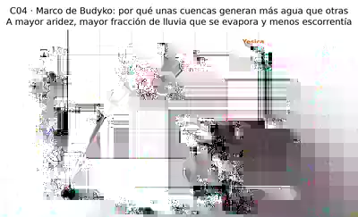
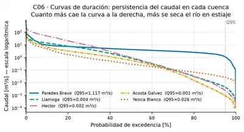
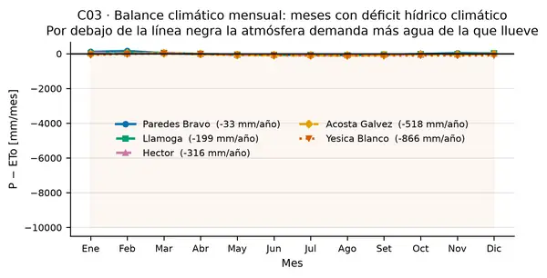
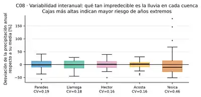
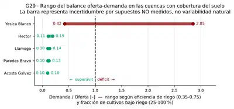
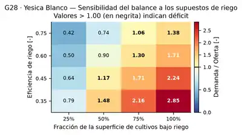

Paredes Bravo
Junín · Jauja
- 824 km²
- 980 mm/año de lluvia
- 25.4 % se vuelve caudal
- Aridez 1.03
Responsabilidad social · Ingeniería hidrológica
Cinco cuencas del Perú. Cuarenta y cinco años de datos.
Una sola pregunta: ¿alcanzará el agua?
cuencas estudiadas
días de lluvia medidos
escenarios climáticos
horizonte del estudio
De cada 100 litros que llueven sobre una cuenca altoandina, entre 74 y 91 se evaporan antes de llegar a un cauce.
El resto es todo lo que tenemos: lo que beben las comunidades, lo que riega los cultivos y lo que mantiene vivo al río. Cuanto más seca es una cuenca, mayor es la fracción que se pierde en el aire.
Ese principio físico se llama marco de Budyko, y explica por qué dos cuencas vecinas pueden tener destinos hídricos opuestos.
Entre 569 y 980 mm al año según la cuenca
Entre 1002 y 1435 mm de demanda atmosférica
Solo del 9 % al 25 % se convierte en caudal
Ordenadas de la más húmeda a la más árida. Desliza para comparar.
Junín · Jauja
Junín · Yauli
Huancavelica · Junín
Cajamarca
Cajamarca · Lambayeque
Todas las figuras provienen del estudio hidrológico. Ningún dato es ilustrativo.




El agua no falta porque llueva poco.
Falta cuando pedimos más de lo que el territorio puede dar.
Se procesaron 10 modelos climáticos globales de la NASA en 3 escenarios de emisiones, uno por uno.
El resultado sorprende: la mayoría de los modelos proyecta más lluvia, no menos. Pero también proyecta más calor, y con más calor la atmósfera reclama más agua.
Importante: los diez modelos subestiman la lluvia histórica entre 31 % y 42 %. Reconocerlo no debilita el estudio: lo hace honesto. Cualquier proyección debe leerse con esa incertidumbre a la vista.
Emisiones bajas · el mundo cumple
Emisiones altas · rivalidad regional
Emisiones muy altas · sin frenos


El clima no decide solo. La forma en que usamos el agua pesa tanto o más.
Pasar de gravedad tradicional a goteo reduce a menos de la mitad el agua necesaria para el mismo cultivo. Es la palanca más poderosa que existe.
Dejar correr al menos el 10 % del caudal mantiene vivo al río. No es agua perdida: es la que sostiene el sistema del que todos dependemos.
Ninguna de las cinco cuencas tiene una estación de caudal utilizable. Sin medición no hay gestión posible.
Todo este estudio es abierto y reproducible. El conocimiento sobre el agua debe ser un bien común, no un archivo cerrado.
Cada gota que llega a tu casa recorrió una cuenca entera. Cuidarla empieza por entender de dónde viene.